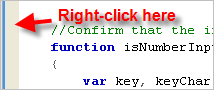

This page describes how to display or hide the line numbers for your code in the editor and how to change your line number preferences.
Contents |
Introduction
You can quickly display or hide the line numbers for your code from the editor that you are working in. You can also change the appearance of the line numbers by changing your preferences.
Instructions
Displaying or hiding line numbers
To toggle line numbers on or off:
- Right-click in the gray margin at the left of the editor (shown below).

- From the context menu, select Show Line Numbers to toggle line numbers on and off.
{kind=link}
Changing your line number preferences
To change your line number preferences:
- From the Window menu, select Preferences...
Aptana opens a Preferences pop-up window.
- On the left side of the Preferences window, expand the General tree.
- Expand the Editors tree.
- Under Editors, select Text Editors .
- On the Text Editors screen, change your preferences.
- Click the OK button to apply your changes and close the Preferences window.